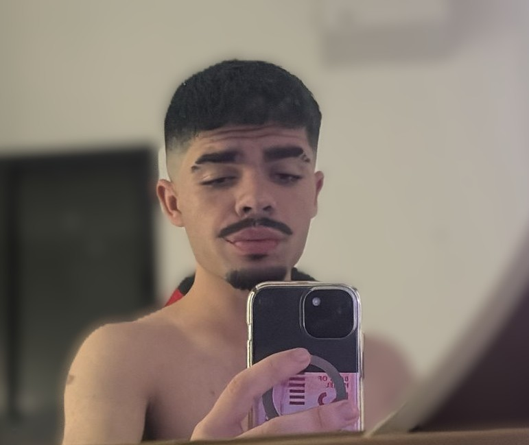
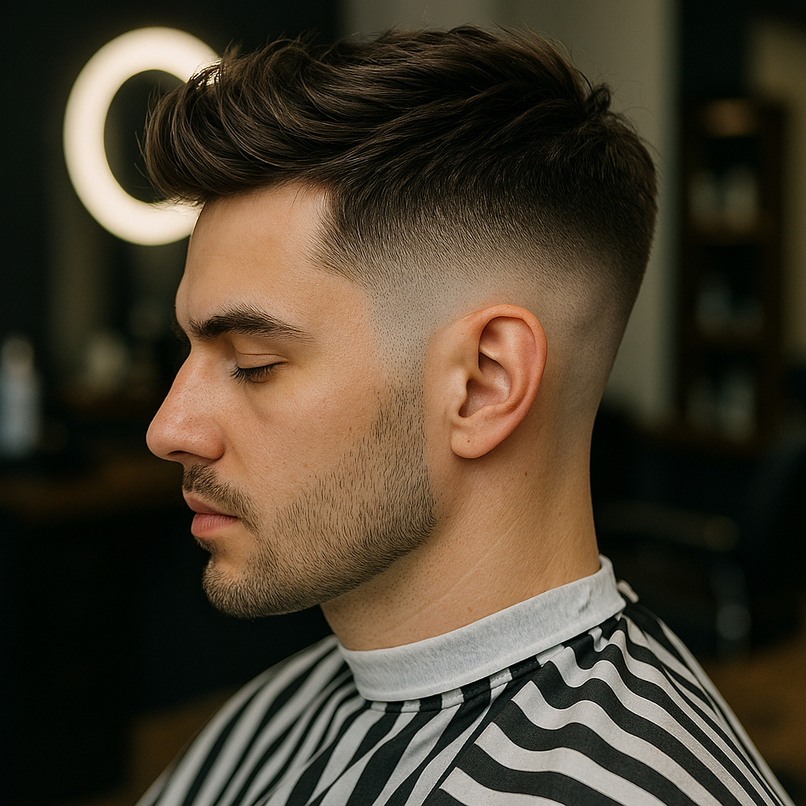

About Yosef Buganim
Yosef Buganim is a highly skilled professional barber with years of experience in the art of men’s grooming. Trained by some of the finest master barbers in the industry, Yosef has completed advanced professional programs and holds internationally recognized barbering certifications.
His journey began with a deep passion for precision, style, and craftsmanship. Over the years, Yosef has mastered classic barbering techniques while continuously refining his skills to match modern trends and contemporary styles. From traditional scissor work to sharp fades and detailed beard shaping, every service is performed with absolute attention to detail.
What truly sets Yosef apart is his personal approach. He believes that every client deserves a haircut tailored specifically to their personality, lifestyle, and facial structure. For Yosef, barbering is not just a profession — it is an art form built on trust, consistency, and excellence.
At Yosef Buganim Barber Shop, clients experience more than a haircut. They step into a space where professionalism, comfort, and high standards come together, ensuring every visit leaves them feeling confident, refreshed, and looking their best.

Services

Haircut
₪70
Beard Trim
₪40